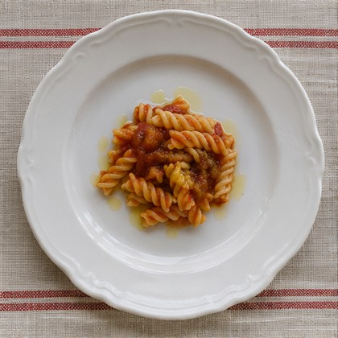

Diario alimentare
Bozza rimossa.
Analizza un piatto
Carica una foto, controlla gli ingredienti proposti da Claude e calcola carboidrati e bolo.

Parametri per il bolo di
Usati dalla formula bolo = carboidrati / ICR + (glicemia attuale − glicemia obiettivo) / ISF.
I parametri sono cifrati in questo browser con la chiave del diario del profilo: Payara riceve e conserva solo il testo cifrato.